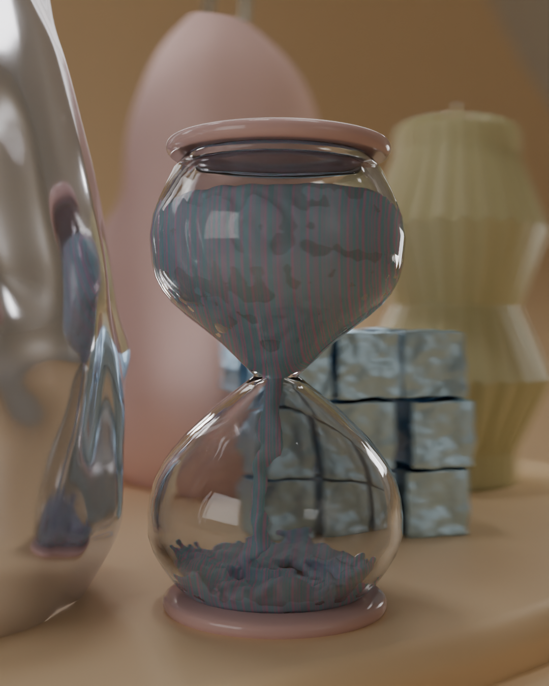
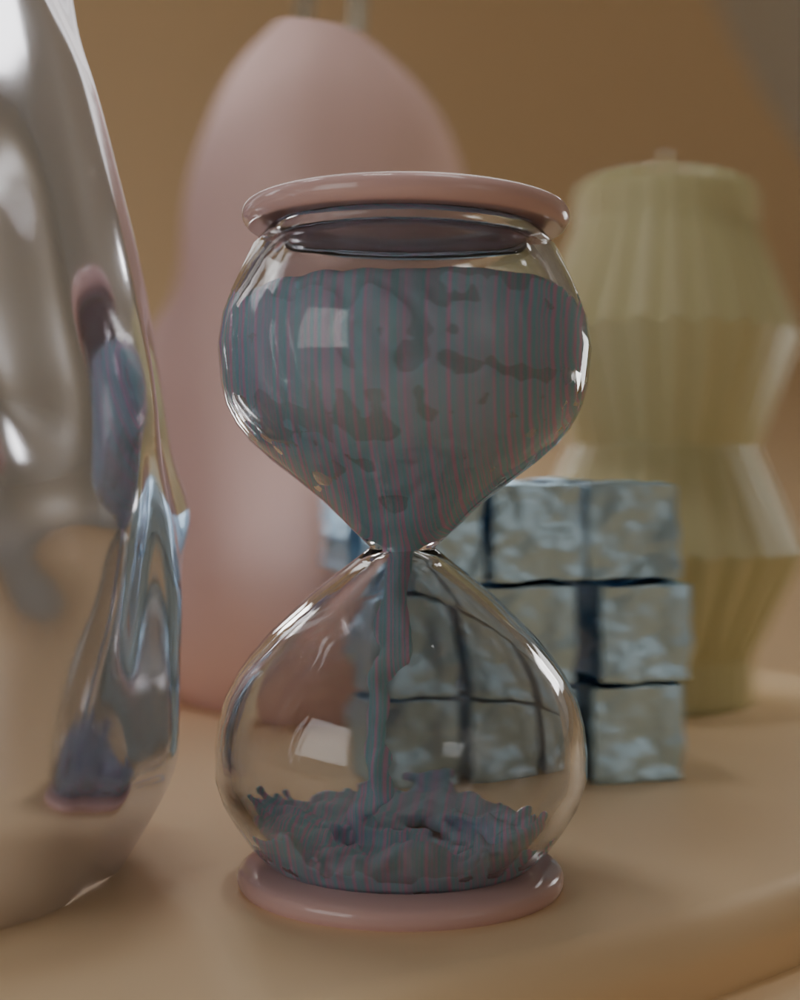

MODERNES STILLLEBEN
Alleine
Web
2025
https://tamararoos.github.io/FS25-KICKWEB/ Im Modul KIWEB bestand die Aufgabe darin, ein typografisches Plakat digital umzusetzen. Dabei konnten wir ein Plakat frei wählen, das uns visuell ansprach und gestalterisch interessierte. Ziel war es, das gewählte Plakat so zu gestalten, dass es auf unterschiedlichen Bildschirmgrössen funktioniert – sowohl auf breiten als auch auf schmalen Displays. Der Fokus lag somit auf einer responsiven Umsetzung. Zusätzlich sollte eine Animation oder Transition eingebaut werden, um dem Plakat eine dynamische Komponente zu verleihen und das Design interaktiv zu gestalten.
 
